UX audit: Housekeeping
Data state found: 3 rooms (101, 102, 201), none with a floor or building, 0 dirty, 2 clean and waiting for inspection, 1 inspected with a guest in house. One arrival today (201, not ready). Inspection is Off for the Organization and On for this Property. So “empty” and “60 dirty rooms” are inferred from code, not seen. I could not trigger a departure-driven dirty room (that needs a check-out, which is forbidden), so the automatic turnover is judged from the docs and tests only.
1. Verdict
- On a phone, this persona cannot mark a room clean from the Housekeeping page without hunting for the control. At 375 px the “…” menu that holds the mark actions is 336 px off-screen to the right of a horizontally scrolling table, and when you scroll to it the room number has scrolled out of view (HK-01, verified).
-
The feature was designed for somebody else.
use-case.mmdsays “Housekeepers are not expected to use the app: whoever hears ‘204 is done’ records it”, and assigning work to a named housekeeper is out of scope (HK-DEF-04). An attendant doing 30 to 60 marks a shift on a phone is a different product than the one built. I think that premise is worth challenging if attendants are real users; if the desk really does the typing, the phone findings matter less and HK-04, HK-06 and HK-07 matter more. - The good phone path exists but is on a different page: the Today page for the Housekeeping role has a “Clean these first” list with a priority badge and a one-tap “Mark inspected” button (verified, shot 10). It shows only the top 6 rooms and the Housekeeping page itself has none of it.
- Correctness and permissions are solid: the board reads the same in English, Turkish and Arabic (RTL mirrors properly), roles that may not mark see a read-only board, and a bad Property link lands on a calm empty state.
- Biggest risk: on a busy day (many dirty rooms) the board is a plain 10-per-page table sorted by building and floor, with no due-out or priority marker, no floor filter and 32 px tap targets (HK-02, HK-04, HK-05). That is inferred for volume, verified for the parts.
2. Findings
| ID | Severity | Where | What happened | What I expected | Suggested fix | Effort | Evidence | Status |
|---|---|---|---|---|---|---|---|---|
| HK-01 | blocks work |
/en/housekeeping, Housekeeping, 375 px, 3 rooms
|
The table is 744 px wide inside a 343 px container. Occupancy, Last changed and the “Actions for 101” button sit at x=711 on a 375 px screen. After you swipe the table to reach the button, the Room and Status columns are gone, and the opened menu (Mark inspected / Mark dirty) does not name the room. | The room, its status and a big “Mark clean” control visible together, without sideways swiping. |
Below the md breakpoint render each room as a card:
number, status badge, a due-out or arrival line, and one
full-width primary mark button. Keep the table for wider
screens.
|
M | Shots 01, 02, 03, 04. Reproduced Y (twice). | verified |
| HK-02 | causes errors | Housekeeping page and Today, 375 px, Housekeeping | Tap targets measured: row select checkbox 16x16 px (its cell is about 37 px wide), “…” row action 32x32, bulk Mark clean / inspected / dirty 32 px high, pagination arrows 32x32, Today “Mark inspected” 128x32. Mark clean and Mark dirty sit next to each other in the bulk bar. | At least 44 px on the controls used 30 to 60 times a shift, with wet or gloved hands, and space between opposite actions (clean vs dirty). | Raise mark controls, checkboxes and pagination to a 44 px minimum on touch; separate “Mark dirty” from the other two. | S |
Shots 03, 05, 10. Measured with
getBoundingClientRect. Reproduced Y.
|
verified |
| HK-03 | slows me down | /en/housekeeping, any role, 375 px |
Five stat tiles wrap onto three rows and take the whole first screen. The first room is below the fold; I scrolled about one full screen to see 101. | The rooms that need work in the first screen. | Make the tiles one compact row of tappable chips that also act as the status filter, or put them below the list on phones. | S | Shots 01, 02. Reproduced Y. | verified |
| HK-04 | slows me down |
/en/housekeeping, all roles, 3 rooms (volume
inferred)
|
The board has no “due out today”, “arriving
today” or priority column. Occupancy says only
“Guest in house” or “Vacant”. The
priority badge (“Arrival · inspect”) exists
only on Today. Opening the board from Today’s queue
(?show=clean_first, “1 room to clean
first”) shows room 201 as a plain “Clean / Waiting
for inspection” row with no reason it is first. Default
order is building, floor, room name (module.ts line 148), not
dirty first.
|
Dirty rooms first, with “leaving today” and “guest arriving” shown on the row, because that is what decides which door to knock on. |
Add an urgency column or badge using the same
cleanFirst priority Today already derives; sort by
it by default; keep the badge in the narrowed view.
|
M |
Shots 09, 10; code
today-derive.ts (cleanFirst,
roomsInFilter).
|
verified screens, inferred default sort effect |
| HK-05 | slows me down | /en/housekeeping, all roles |
There is no floor filter control. A floor view exists only as a
deep link (?floor=, from Today’s floor
readiness). The search box covers Room and Where, but the code
searches only name and building, not
floor. On staging no room has a floor, so I could not see a
floor view.
|
Pick “Floor 3” and see only that corridor. | Add a floor chip or select next to the status chips; include floor in search. | S |
Code:
housekeeping-board.tsx
(searchColumns),
page.tsx (parseFloorFilter). Not
reproduced live: no floor data.
|
inferred |
| HK-06 | causes errors |
/en/housekeeping, Front Desk and Housekeeping
|
The tile “Ready to let” shows 1. The only room that can be counted is 102, which is Inspected and has a guest in house. “Ready” is housekeeping readiness, ignoring occupancy, but the label says it can be let. | “Ready to let” to mean vacant and ready, or the label to say what it counts. | Count only vacant ready rooms under that label, or rename it (“Cleaned and checked”). | S | Shots 01, 11 (rooms and tile). Reproduced Y. |
verified numbers,
inferred cause
(inRoomFilter)
|
| HK-07 | slows me down | Housekeeping board vs Today vs Arrivals | The same state is worded three ways: “Waiting for inspection” (board), “Clean, awaiting inspection” / “Awaiting inspection” (Today), and on Arrivals room 201 reads “Not ready” with the spray-can (dirty) icon while the board calls the same room “Clean” with a green badge. The desk sees a dirty icon on a clean room. | One term and one icon per state across Today, Arrivals and the board. | Pick “Awaiting inspection”; on Arrivals show “Awaiting inspection” (not “Not ready”) with the clean icon when the room is clean. | S | Shots 02, 10, 12. | verified |
| HK-08 | slows me down |
/en/housekeeping, any marking role; long list
(inferred)
|
The result line (“N rooms updated”, or the refusal)
is an aria-live paragraph above the table, not a
toast. The bulk bar is also above the table and is not sticky
(position: static measured). With many rooms,
ticking a room far down means scrolling up to press the button,
and then not seeing the confirmation.
|
A confirmation next to the room I just touched, and a bulk bar that stays on screen while selected. | Sticky bottom bar on phones for the selection; toast or inline row confirmation. Undo is by marking back (by design, HK-S2-05); a toast with Undo would shorten a misfire. | M |
Shot 05 (bar above list); code
housekeeping-board.tsx. I did not submit a mark.
|
verified bar position, inferred feedback behaviour |
| HK-09 | slows me down | /en/housekeeping, volume (inferred) |
Table pages at 10 rows (“Per page 10” at 768 px; only Previous/Next at 375). Marks are capped at 60 rooms per action and the over-limit message reads “Choose between one and sixty rooms.” Marking 60 dirty rooms means 6 pages of ticking, with the checkbox and bar issues above. | “Select all dirty” and a page size that fits a corridor. | Add “select all in this filter”; default page size 25 or 50 on the board. | M |
Shot 08 (per-page), code MARK_BATCH. Not seen with
real volume.
|
inferred |
| HK-10 | polish | /en/housekeeping, 768 px |
With the sidebar open at 768 px the table still clips Occupancy and Last changed, the stat labels clip (“INSPECT”) and the “Ready to let” tile wraps to three lines. | Labels and columns fit, or the sidebar collapses. | Collapse the sidebar by default under 1024 px or let tiles wrap. | S | Shot 08. | verified |
| HK-11 | polish | Housekeeping and Front Desk, all widths | The “Check rooms after cleaning” settings card is shown to everyone and for these roles both selects are disabled with “A manager can change this.” twice. On a phone it is a full screen of controls that cannot be used, under the list. | A read-only line (“Rooms are checked after cleaning here”) for non-managers, the editable card for managers. | Collapse the card to one sentence when neither select is editable. The Manager view of it was seen but not changed (selects save on change, so I did not touch them). | S | Shots 02, 11. | verified |
| HK-12 | polish | /en/housekeeping?property=<unknown> |
A Property id the viewer does not reach shows “Housekeeping is not on at this Property” and talks about a Subscription. For an attendant with a stale link the real next step is the “Choose a Property” control in the bar. The empty state is calm and does not leak another Property (good), but the copy is aimed at an administrator. | A line that names the action for this person. | Add “Pick your Property above” when the viewer has other Properties. | S | Shot 13. | verified |
| HK-13 | polish | /en/housekeeping, all roles |
Two stacked titles say the same thing: h1 “Housekeeping” and a sentence heading “Which rooms need cleaning at Demo Otel İstanbul”, repeated again as the table caption. The sentence is not accurate for a list that includes rooms already clean. “Not recorded yet” appears in Last changed for rooms never marked, which reads like a failure; a 12-day-old time shows no year (“Sep 29, 13:08”). | One title; “Never marked” and a date that is unambiguous. | Drop the sentence heading (or make it a count: “1 room to clean”), show the date when older than today. | S | Shots 01, 11. | verified |
13 findings: 1 blocks work (HK-01), 2 cause errors (HK-02, HK-06), 6 slow me down (HK-03, 04, 05, 07, 08, 09), 4 polish (HK-10 to HK-13). I did not invent rows for the not-built items; those are in section 6.
Screenshots
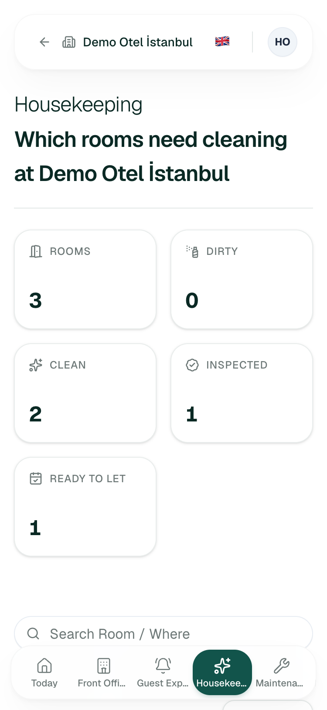
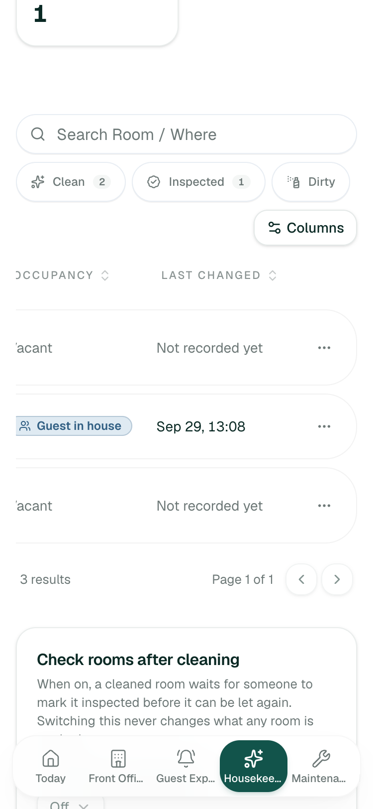
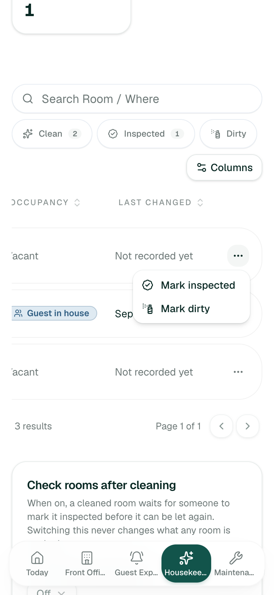
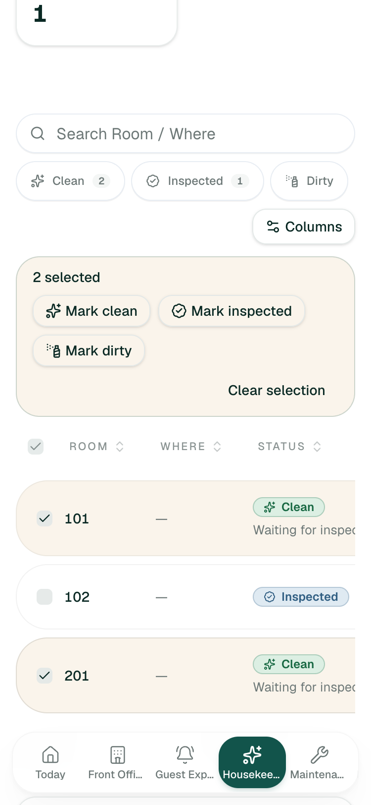
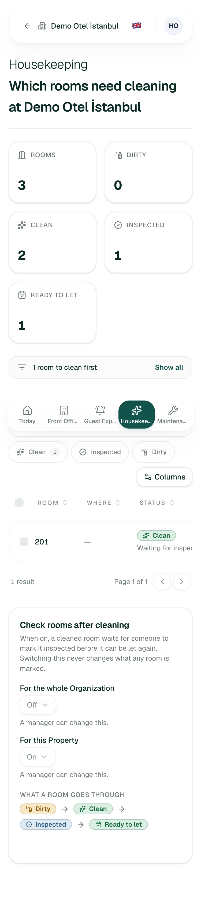
?show=clean_first: room 201, no reason shown
(HK-04).
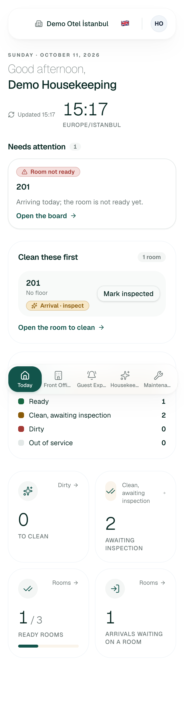
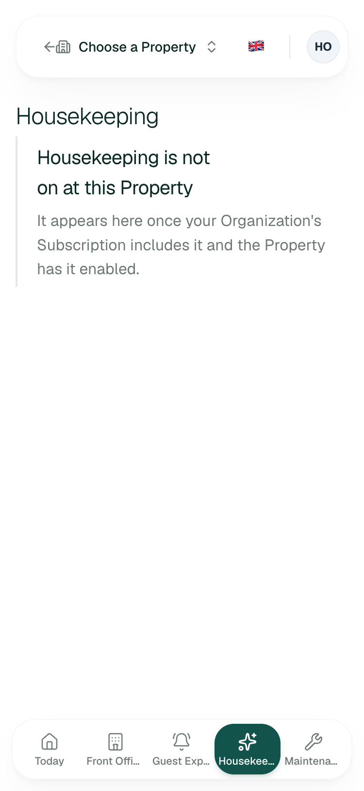
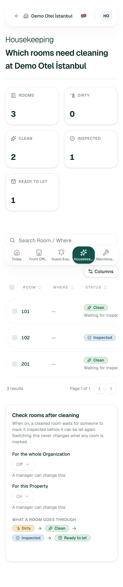
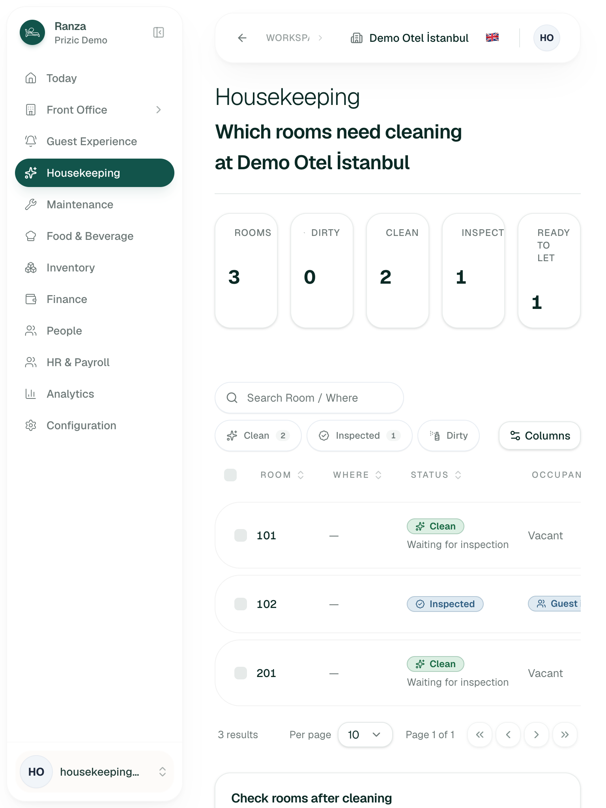
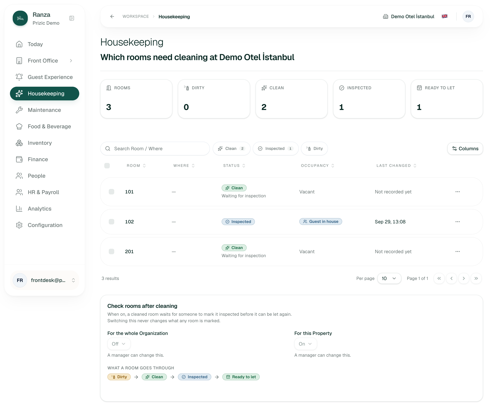
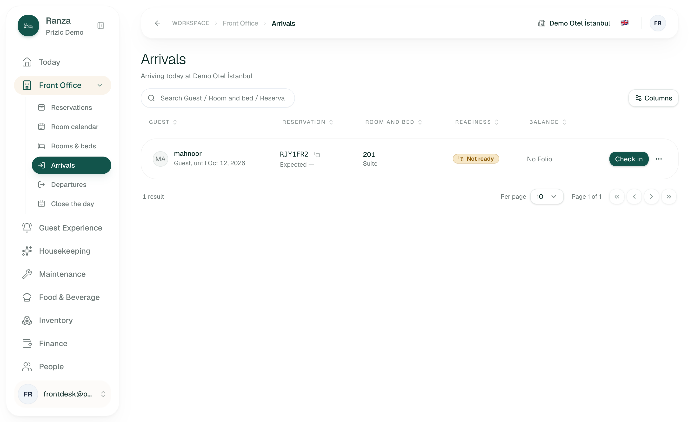
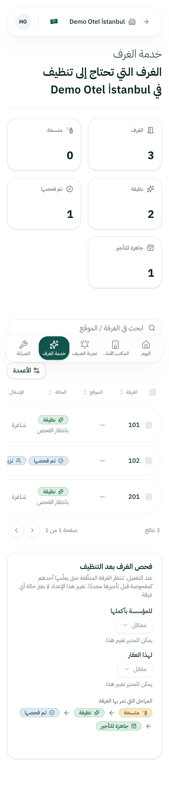
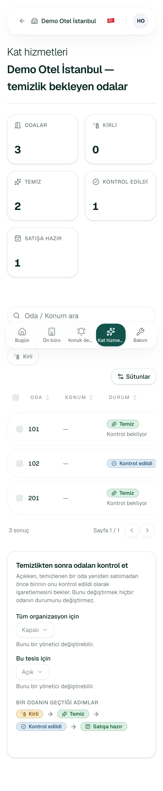
3. Jobs
Pass/fail tests were written before each attempt. I did not time with a stopwatch: browser-tool latency is not human time, so I report taps and swipes counted instead. Jobs that need a valid submit were stopped at the confirm step: stopped before submit, not persisted.
| # | Job | Pass test (written first) | Result | Seconds | Taps / swipes |
|---|---|---|---|---|---|
| J1 | Start of shift on a phone: which rooms are dirty, due out, ready. | Within one screen and no sideways swipe I can name the dirty rooms and which are leaving or arriving today. | Fail on the board (tiles fill the screen, due-out absent, HK-03/HK-04). Pass on Today (priority list), verified. | not timed | Board: 1 scroll screen. Today: 0. |
| J2 | Mark one room clean (the 30 to 60 times a shift task). | At most 2 taps, the room name visible at the moment I confirm. | Fail on the board: 1 sideways swipe + “…” + menu item = 3 actions, room name off-screen. Pass on Today for the top-6 queue rooms (1 tap). Stopped before submit, not persisted. | not timed | Board 3 + 1 swipe; Today 1. |
| J3 | Bulk: mark several rooms at once. | Tick N rooms and one tap marks them, with a clear count. | Works as designed (“2 selected” bar, three actions). 16 px checkboxes and a non-sticky bar make it error-prone (HK-02, HK-08). Stopped before submit, not persisted. | not timed | 2 ticks + 1 tap (+ scroll up when list is long, inferred). |
| J4 | Narrow to one floor and to dirty rooms. | A visible control for floor; status filter in one tap. | Status filter pass (chips with counts). Floor fail: deep link only (HK-05); no floors on staging to test. | not timed | Status 1 tap; floor n/a. |
| J5 | Front Desk: is the arriving guest’s room ready? | Arrivals or board tells me yes/no in plain words with the same wording as housekeeping. | Partial pass: Arrivals says “Not ready” (correct) but with a dirty icon, while the board calls the room Clean/waiting for inspection (HK-07). | not timed | 1 page change. |
| J6 | Error recovery: I marked the wrong room. | I can fix it in one action and know the first mark did not stick. | Design: mark it back, no reason asked (HK-S2-05, HK-S2-06). No undo toast (HK-08). Stopped before submit; judged from code, inferred. | n/a | 3 (same as J2). |
| J7 | “It is broken and I am under pressure”: many dirty rooms after a checkout rush. | Dirty rooms first, markable in bulk across the whole list. | Likely fail, inferred: 10 per page, default order building/floor/name not dirty-first, 60-room cap, no “select all dirty” (HK-04, HK-09). Departure-triggered dirty is automatic by design (HK-S1-01, worker) but I could not trigger a check-out to see it. | n/a | n/a |
| J8 | Use it in Turkish and Arabic. | Every string translated, Arabic mirrored, status as word + icon. | Pass, verified at 375 px (shots 06, 07). Vocabulary is also translated for filters and menus (messages checked). | not timed | 0. |
| J9 | Read-only view / wrong Property link. | No dead end, no other Property’s rooms. |
Pass for the bad link (shot 13, copy polish
HK-12). Read-only board for a role without the permission
inferred from readOnly copy: all three
roles I used hold the mark permission.
|
not timed | 0. |
4. Top changes
- I can mark a room clean with one thumb, seeing which room it is — a card list with a full-width mark button below the tablet breakpoint (HK-01, HK-02). Highest frequency, biggest time saved.
- I can see which rooms to do first without opening another page — priority and “leaving / arriving today” on each board row, dirty-first default order (HK-04).
- The first screen is rooms, not totals — compact status chips that double as the filter (HK-03).
- I can finish a long list in one pass — sticky selection bar, “select all in this filter”, larger default page (HK-08, HK-09).
- I can pick my floor — a floor control and floor in search (HK-05).
- The front desk reads the same word for a room everywhere — one term and icon on Arrivals, Today and the board (HK-07), and an honest “Ready to let” (HK-06).
- I see that my tap worked, next to the room — inline confirmation or toast with undo (HK-08).
- Only controls I can use are shown — collapse the inspection card for non-managers (HK-11).
5. Inconsistencies with sibling screens
- Today does this better. Today’s “Clean these first” carries priority badges and a single-tap mark; the Housekeeping page, the page the product calls the room board, does not (shots 09, 10). verified
- Wording: “Waiting for inspection” (board) vs “awaiting inspection” (Today) vs “Not ready” (Arrivals, with the dirty icon). In Turkish the readiness tile is “Satışa hazır” (ready to sell) and in English “Ready to let”; fine, but both ignore occupancy (HK-06). verified
- Mobile pattern: Today and the top bar are built for narrow screens, with a bottom navigation bar; the data tables are the part that is not (HK-01, HK-10). verified
- Back button (ADR 0035): present on the Housekeeping page, leading edge, goes to Today and keeps the Property, mirrored in Arabic. verified (shots 01, 06).
6. Not built / needs backend work
-
Assignment to attendants / who cleaned it: out of
scope,
HK-DEF-04indocs/features/housekeeping/edge-cases.csv. The audit log names who pressed the button; no work queue per housekeeper exists. - Do not disturb: not in code, docs, roadmap or blueprint (a case-insensitive search for “do not disturb” and “DND” found nothing). It is not even a deferred row, so if it is wanted it is a design decision, not a UX fix.
-
Out of order: owned by Maintenance
(
HK-DEF-06); the board just shows “Out of service” in Occupancy. Not seen live: no room is out of service on staging. -
Daily cleaning of rooms still in use (stayover):
deferred,
HK-DEF-01, listed as “missing” indocs/roadmap.md. 102 (guest in house) is shown with a static status and has no “service today” state. -
Per-bed status in a shared room: deferred,
HK-DEF-02. -
Auditing the worker’s automatic dirty mark:
deferred,
HK-DEF-03; the row’s null “changed by” is the only trace. -
A phone-first attendant view: not in the roadmap or
the screen handover (
docs/handover/operator-workspace-screens.mdlists housekeeping as built for the board). Treat as a new feature if attendants are to use it directly. -
Departure-triggered turnover: built
(
HK-S1-01,HK-S1-22, worker); the board shows the room dirty even before the worker writes it. Not verified live in this audit.
7. What already works well and must not regress
- Status is a word plus an icon, never colour alone, and “Clean · Waiting for inspection” separates two rooms the desk must treat differently (shots 02, 11). verified
- Turkish and Arabic are complete on this screen, including plural rules, and the layout mirrors cleanly in RTL (shots 06, 07). verified
- The Today “Clean these first” card: priority badge and one-tap mark (shot 10). verified
-
A room it is already in can be re-marked harmlessly, and a double
submit is guarded by one shared in-flight state
(
HK-S2-06, code). inferred -
Narrowing from Today (
?show=,?floor=) opens exactly the counted rooms and offers “Show all” (shot 09). verified - An unknown or unreachable Property shows an empty state, never another Property’s rooms (shot 13). verified
- Permissions: the read-only banner copy, the capability gate and the refusal message are in place (code). Manager sees an editable Property setting and a disabled Organization one with the reason (“Only someone who reaches every Property can change the Organization’s setting.”). verified for text, setting not changed.